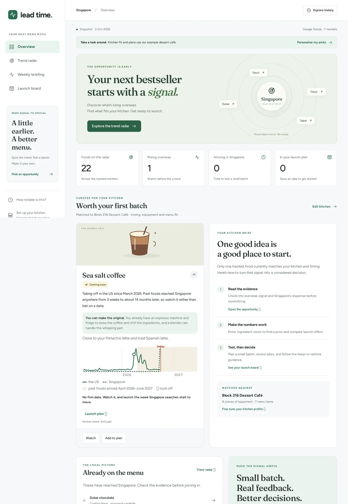

Lead Time
Tells small food businesses which overseas food trends are heading to Singapore, and whether their kitchen can make them.
What I built
- Arrival forecasts for 22 foods across 7 markets, from Google Trends
- A rewindable back-test that publishes its own misses: 1 of 4 forecasts landed
- Launch plans with price, stock and posting dates; every model answer schema-checked

Food trends usually blow up overseas first. Lead Time watches weekly search interest for 22 foods across seven markets, works out how long each one has historically taken to reach Singapore, and tells a small food business which trends are heading its way. For each food it gives a verdict (Go, Go but late, Wait and watch, or Skip), checks whether the kitchen can actually make it, and then helps with the launch: a suggested price and margin, when to bulk order, a launch offer with its break-even, and a dated posting plan.
It grades its own forecasts
Every calculation takes an "as of" date, and a test makes sure no future data leaks in, so the app can be rewound to any past week and checked against what really happened. The results aren't flattering, and the app shows them anyway. Of 4 arrival forecasts that could be strictly checked, 1 fell inside its window. For Korean yogurt ice cream, the window was 19 weeks too early. When past arrivals are too uneven, it says "Wait and watch" instead of inventing a date.
The model doesn't get the last word
An open model judges what the kitchen can make and drafts the launch copy, but every answer is schema-checked. Anything with dates, links, quantities or popularity claims the data doesn't support is rejected and rewritten. All the numbers come from plain Python, and if every model is down, labelled offline rules take over.
Runs on a free server, so the first load can take up to a minute.